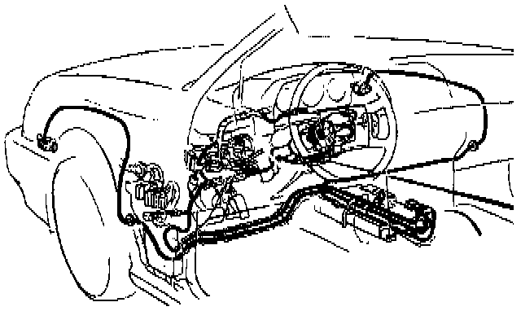

Customer Safety Information

SUPPLEMENTAL RESTRAINT SYSTEM (SRS)
The Legend includes a driver's side Airbag, located in the steering wheel hub, as part of a Supplemental Restraint System (SRS). The following items include, or are located near, SRS components.
- Blower
- Heater Assembly
- Function Control Panel
- Evaporator
- Dash Components
Servicing, disassembling or replacing these items will require special caution and tools. Acura therefore recommends these operations be done by an authorized Acura dealer.
WARNING:
- To avoid rendering the SRS inoperative, which can lead to personal injury or death in the event of a severe frontal collision, all maintenance must be performed by an authorized Acura dealer.
- Improper maintenance, including incorrect removal and installation of the SRS, can lead to personal injury caused by unintentional activation of the Airbag.
- All SRS electrical wiring harnesses are covered with yellow outer insulation and related components are located in the steering column, center console, dash, and front fenders. Do not use electrical test equipment on these circuits.